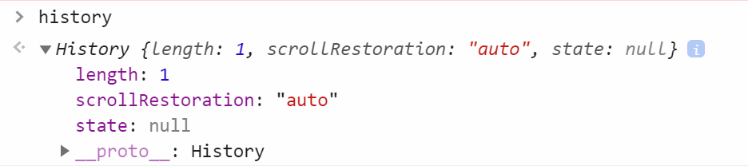
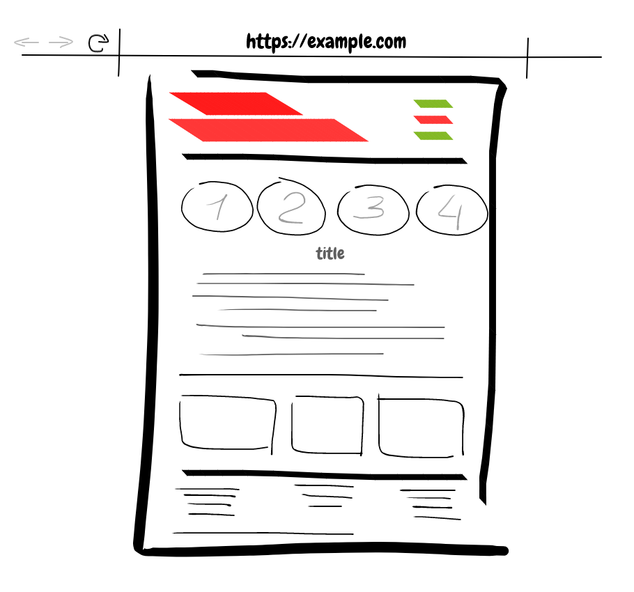
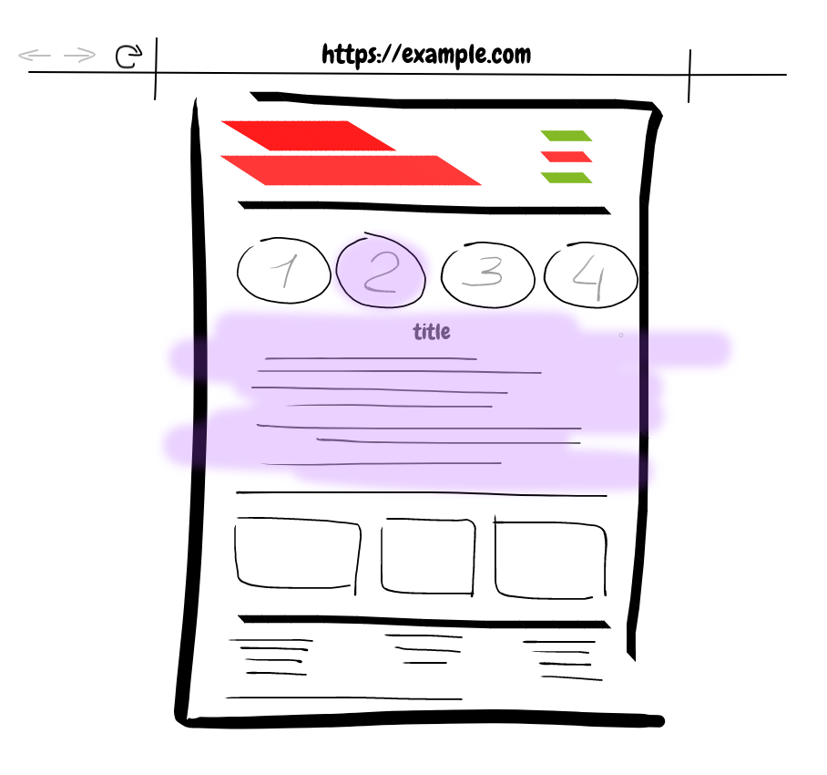
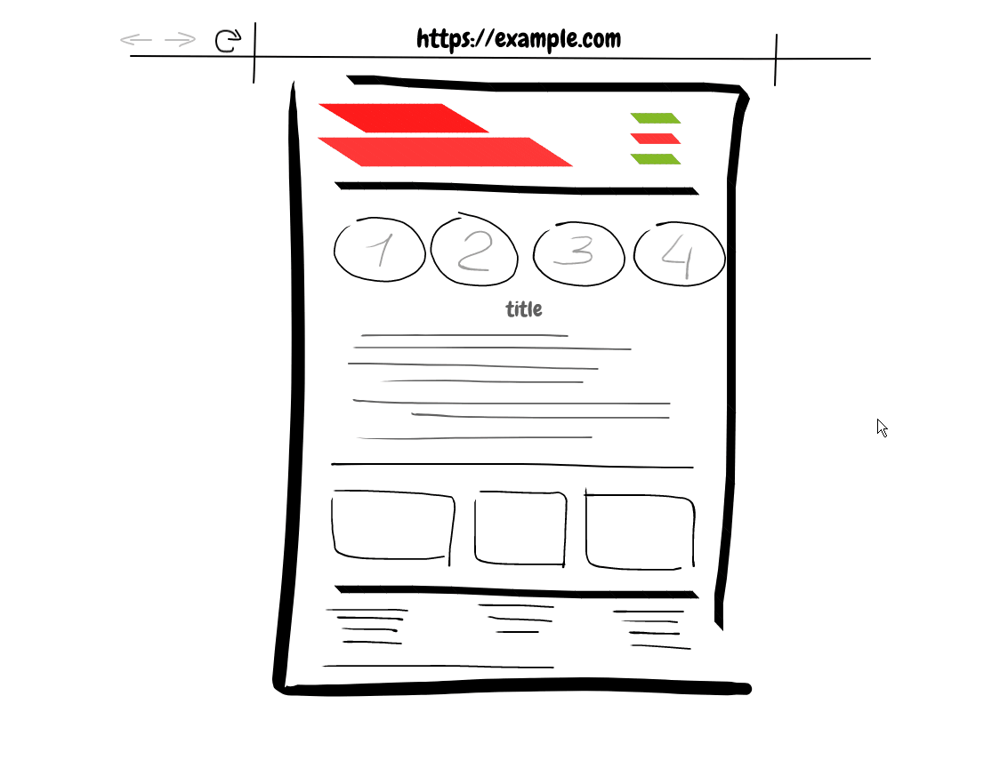
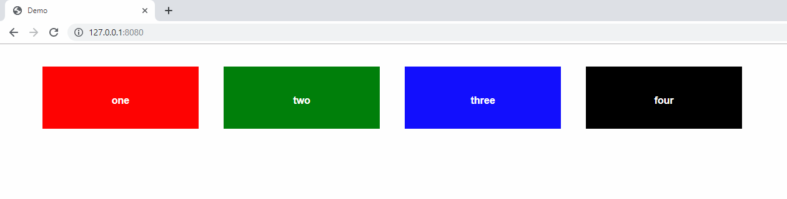
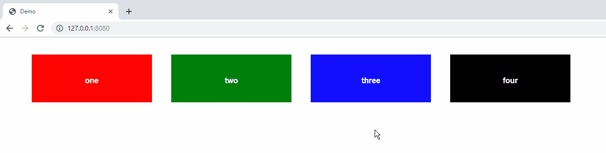
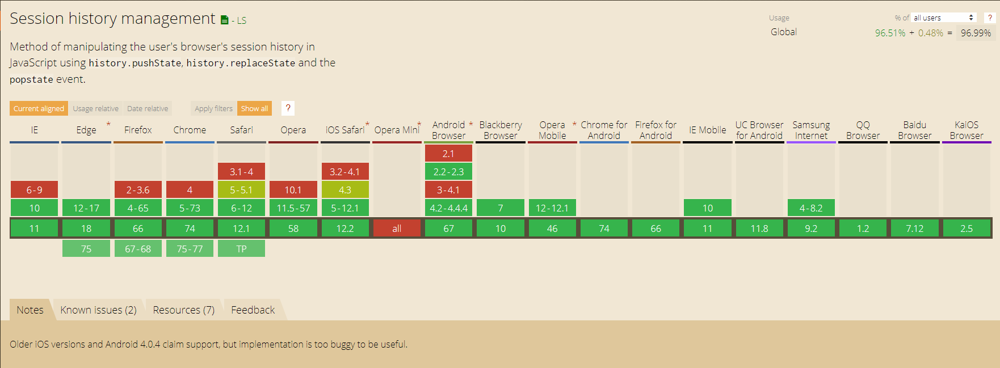

The HTML5 history API is a
standardized way to manipulate the browser history via script.
Features
Traveling through history
Changing the address bar content
Adding and modifying history entries
Triggering the browser navigation methods
The HTML5 history API is a standardized way to manipulate the
browser history via script. Before the history API, developers had
to use hash URLs to change the current URL without reloading the
single-page. Now this API gives us some useful features such
as: traveling through history, changing the address bar
conten, adding and modifying history entries, triggering the
browser navigation methods.
Access the History API
The History API is available on the
window object, so you can call it
like this: window.history
or just history .

The history API is available from the window.history object. You
can simply open the console of your browser and type window.history
(or just history) which will show you the object and its
properties.
Navigate the history
Let’s start with the simplest things you can do with the history
API. You can go back to the previous page using history.back.
This goes to the previous entry in the session history. You can
forward to the next page using history.forward. This is exactly just
like clicking on the browser's back and forward buttons. Also the go()
method lets you navigate back or forward multiple levels deep. To
know how many entries there are in the history, you can call
history.length.
Add an entry to the history
history.pushState(state, title, url);
const stateObj = { some: 'data' }
history.pushState(stateObj, '', '/new')
Parameters
State - object which is associated with the new history entry
created by pushState()
Title - currently ignores by major browsers
URL - the new history entry's URL
It's time to adding and modifying history entries. Using
pushState method you can create a new history entry
programmatically. Calling this won’t change the content of the
page, and does not cause any browser action like changing
window.location would. This method takes three parameters: a
state object, a title and a URL. The first is an object which can
contain anything (there is a size limit however, and the object
needs to be serializable). The second parameter is currently
unused by major browsers, so you generally pass an empty string.
The third parameter is a URL associated to the new state. Note that
the URL needs to belong to the same origin domain of the current
URL.
Modify history entries
replaceState()
allows you to edit the current history state
history.pushState({}, '', '/posts')
const state = { post: 'first' }
history.pushState(state, '', '/post/first')
const state = { post: 'second' }
history.replaceState(state, '', '/post/second')
history.back()
The browser goes straight to
/posts , since
/post/first was replaced by
/post/second .
While pushState() lets you add a new state to the history,
replaceState() allows you to edit the current history state. If you
now call history.back() the browser goes straight to /posts,
since entry named "first" was replaced by "second" entry.
Access the current history entry state
history.state
Returns the current state object.
History.state property returns the current state object.
Thus far, we have covered the pushState and
replaceState events in order to control the browser history, but
browser do not know what it should do when user clicks the browser
"back" and "forward" buttons.
The onpopstate event
This event is called on window every time the active history entry
changes
window.onpopstate = event => {
console.log(event.state)
}
That's what the popstate event is gonna do for us. This code
for example will log the new state object every time you call
history.back(), history.forward() or history.go().
When your page loads, it might have a null state object. This can
happen, if the page sets a state object (using pushState() or
replaceState()) and then the user restarts their browser. When your
page reloads, the page will receive an onload event, but no popstate
event. However, if you read the history.state property, you'll get
back the state object.
THE WHY
The HTML5 history API gives us the ability to tell the browser to
change the URL and only load half of the page.
We've covered the history API, its properties and methods
before, but why should we use them? After all, a simple link can
navigate to a new URL; that’s the way the web has worked for 20
years. And it will continue to work that way. But at the same time,
browsers have always had a fundamental limitation: if you change the
URL, even through script, it triggers a roundtrip to the remote web
server and a full page refresh. This takes time and resources, and
it seems especially wasteful when you are navigating to a page that
is substantially similar to the current page. Everything on the new
page gets downloaded, even the parts that are exactly the same as
the current page. But the history API gives us the ability to
tell the browser to change the URL and download only the part we
need.
Let’s say you have the next page


Clicking on one of the numbered elements should change the content
of the purple part of the page and its URL.
Let's say you have the next page. Clicking on one of the
numbered elements should change the content of the purple part of
the page and its URL.
Something like this

Something like this. So, only half of the page changes, and it
would be unwise to reload it completely. That's where history API
comes into play.
This is the markup for a simple page
<ul class="menu">
<li>
<a href="/item-1" class="menu__item" data-name="item-1">one</a>
</li>
<li>
<a href="/item-2" class="menu__item" data-name="item-2">two</a>
</li>
<li>
<a href="/item-3" class="menu__item" data-name="item-3">three</a>
</li>
<li>
<a href="/item-4" class="menu__item" data-name="item-4">four</a>
</li>
</ul>
This is the markup for a simple page: the unordered list contains
four items with links.
It will look like this after adding some styles

It will look like this after adding some styles.Let's simulate
moving forward in browser history.
Faked "moving forvard"
Add the "active" class to current element , change the URL in the browser location bar , prevent the default page refresh (due to tag <a>).
const items = [...document.getElementsByClassName("menu__item")];
const menu = document.querySelector(".menu");
menu.addEventListener("click", e => {
const name = e.target.dataset.name;
selectItem(name);
history.pushState({ name }, null, `/${name}`);
e.preventDefault();
});
function selectItem(name) {
items.forEach(item => {
item.classList.toggle("menu__item_selected",
item.dataset.name === name);
});
}
So, we need to add a click handler to our menu element, the
function of adding an active class to the current element,
update the browser location bar, and prevent the default page
refresh, cause we work with the link tags. But we still need to
talk about what happens when the user presses the back button.
Popstate event? Right!
Faked "moving backward"
window.addEventListener('popstate', e => {
if (e.state !== null) {
selectItem(e.state.name);
} else selectItem(null);
});
OR
history.replaceState({ name: null }, null, './')
window.addEventListener('popstate', e => {
selectItem(e.state.name);
});
Before that, we bound a state object to each of history entries, now we call
the necessary function with the properties of this object. Do you
remember a null value of the state object? That's why we're
checking him out. We can also replace our default state.
It's done!

It's done! The state object could have something less primitive,
like some page content, image links, or Ajax request links. It
would work the same way.
Browser Support

Okay, not bad. But what about browser support? Wow, this green
line is a good sign. Even IE can work with that. Well, the
history API has created a great impact on how our simple web
application works. It make it easy to create efficient single-page
application. It's a really nice API, isn't it? That's all I wanted
to say. Thanks very much!